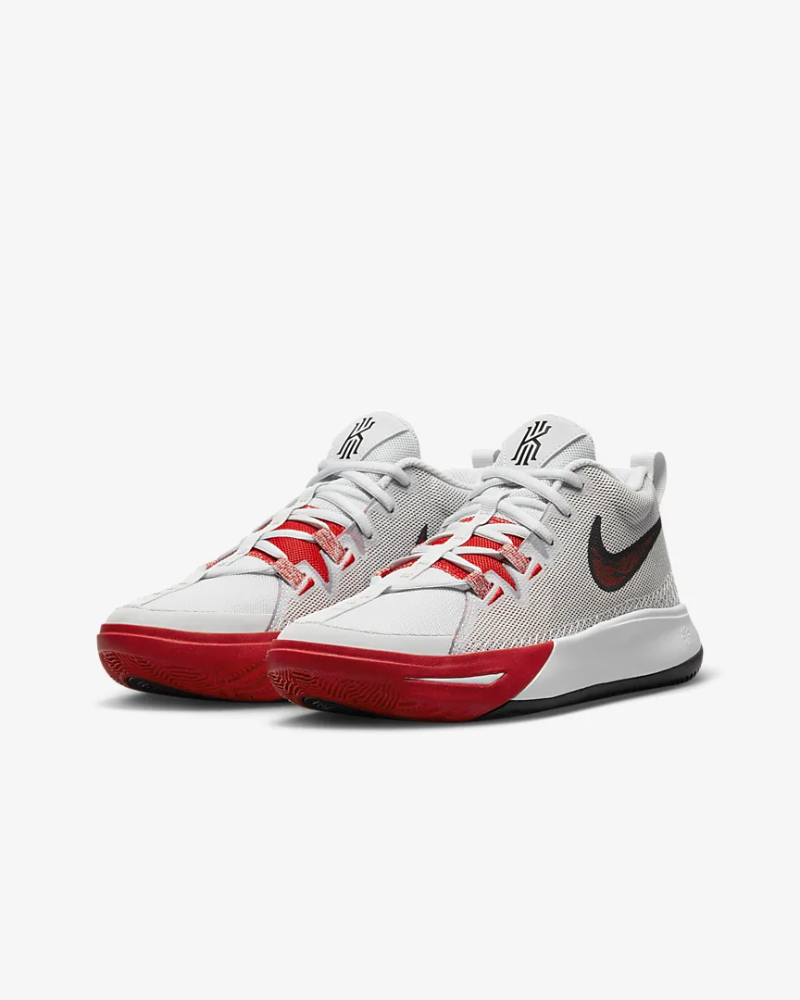
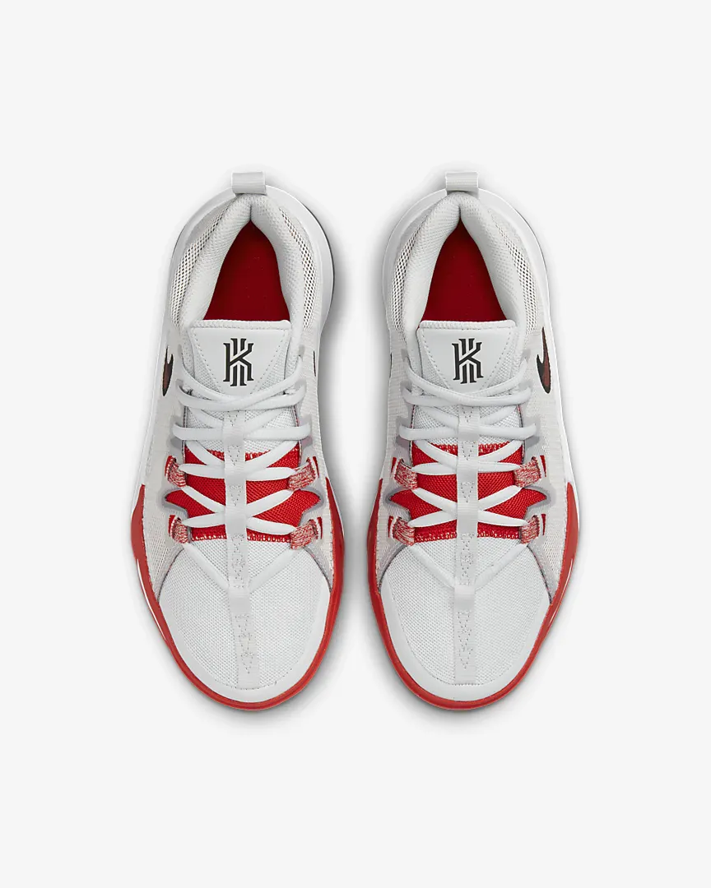

|

|

|
Get your defender on their heels all game long with the Kyrie Flytrap 6. A lightweight and breathable design helps you move easily around the court. Soft cushioning and traction make sure you can confidently cut and pivot to your spot when it's game time.
Ground Control
A full-length rubber sole provides traction on the court.
Easy Moves
Soft foam underfoot provides lightweight cushioning while you run and jump. Additional foam on the collar and tongue gives extra comfort around the ankle.
Classic laces
Colour Shown: Photon Dust/University Red/White/Black
Easy Moves
Soft foam underfoot provides lightweight cushioning while you run and jump. Additional foam on the collar and tongue gives extra comfort around the ankle.
|